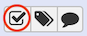

Workflow upload
Same as data libraries, you can import workflows, from shared data that has been pre-set in your Galaxy server for this training session.
To access these workflows :

-
Click the menu
Données partagées(Shared data) and select the submenuWorkflows. You should see two workflows :paired-data-STAR-RNAseqandpaired-data-HISAT2-RNAseq -
For each workflow, click on the arrow and select
Import.
Now, you'll be able to see these workflows in the Workflow menu.
Running workflows
You need to return to our first galaxy history Inputs, to do so :
-
Click the menu
Utilisateurand select the submenuHistoriques sauvegardés. -
Click on
Inputs. Its status is now current history.
Prepare inputs
These workflows use data collection as inputs, one per condition treat and untreat. Let's create our two data collections !
-
Click on the checked box. 
-
Select all treated datasets in pair ends :
GSM461180_1_treat_paired.fastq.gzGSM461181_1_treat_paired.fastq.gzGSM461180_2_treat_paired.fastq.gzGSM461181_2_treat_paired.fastq.gz
-
Then click on the button
Pour toute la sélection...andBuild List of Dataset Pairs. -
Enter a name for your dataset collection.
Name: Treat data pairs. -
Create list

Redo a data collections for untreated datasets.
-
Unchecked the previous datasets.
-
Select all untreated datasets in pair ends :
GSM461177_1_untreat_paired.fastq.gzGSM461178_1_untreat_paired.fastq.gzGSM461177_2_untreat_paired.fastq.gzGSM461178_2_untreat_paired.fastq.gz
-
Then click on the button
Pour toute la sélection...andBuild List of Dataset Pairs. -
Enter a name for your dataset collection.
Name: Untreat data pairs. -
Create list
You are now the happy owner of two dataset paired collections !
It's time to test the worflows !
-
Go to Menu
Workflow. -
For the workflow
imported: paired-data-HISAT2-RNAseq, click on the arrow and thenRun. -
History OptionsSend results to a new history: Yes
-
1: treated data pairs: Treat data pairs -
2:GTF: Drosophila_melanogaster.BDGP6.95.gtf.gz -
3: un-treated data pairs: Untreat data pairs -
Run workflow
Redo the same for the workflow imported: paired-data-STAR-RNAseq.